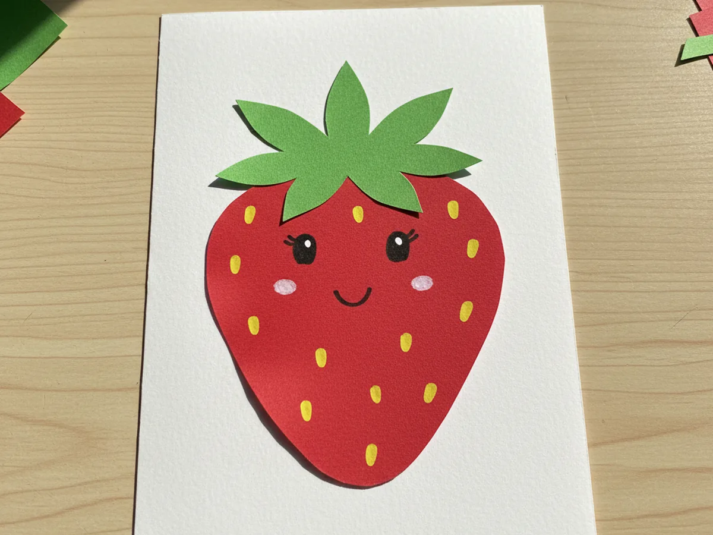
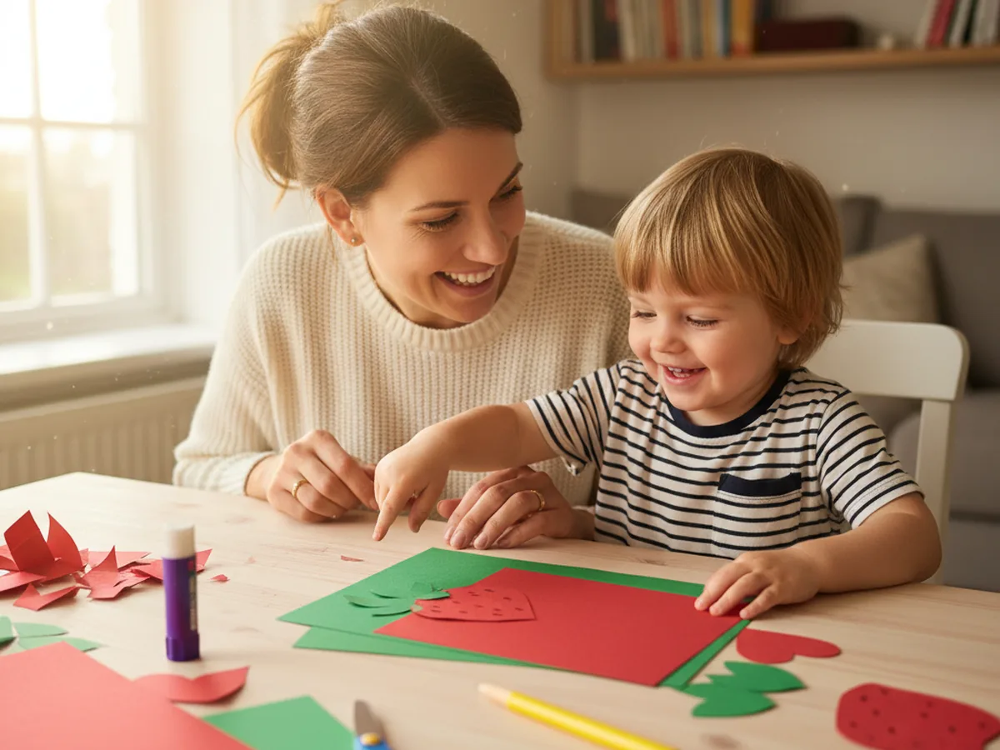
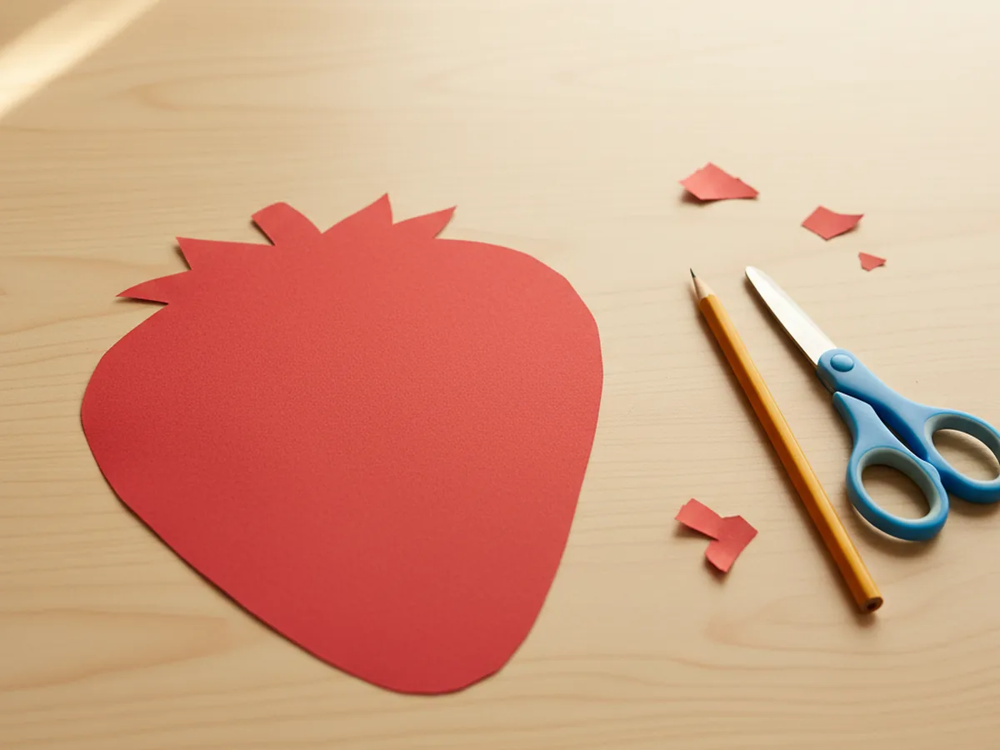
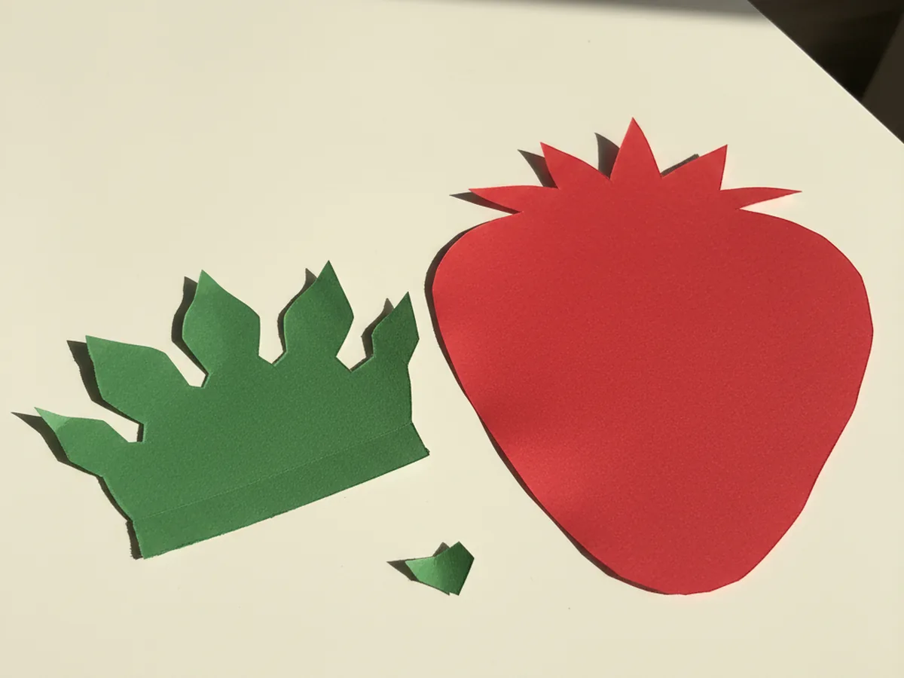
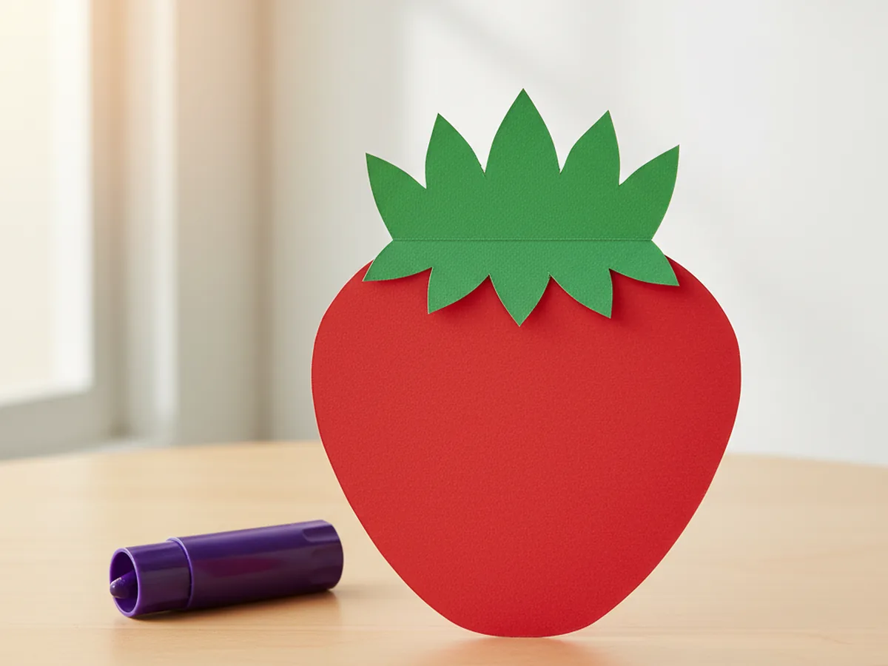
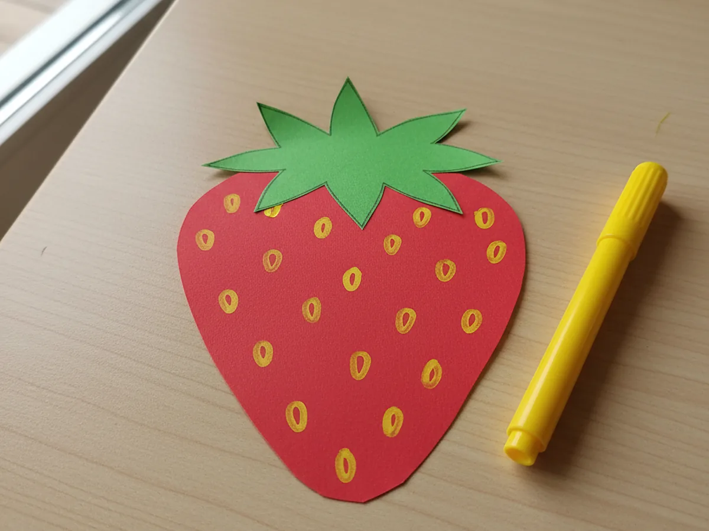
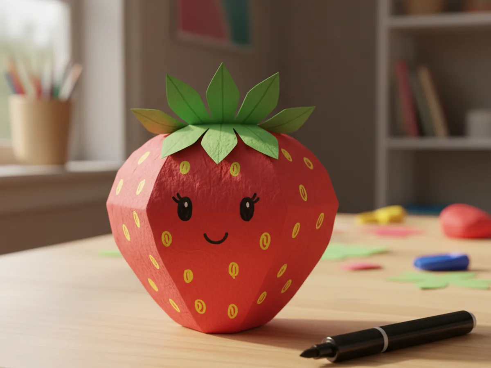
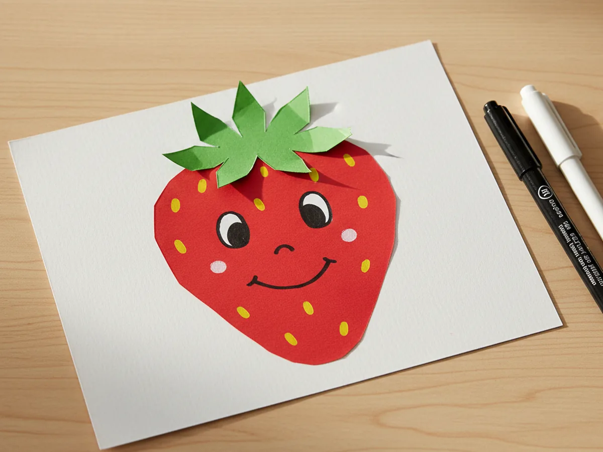

There is something so cheerful about pulling out a few sheets of red and green paper on a warm afternoon and watching a sweet little berry come to life on the kitchen table. This paper strawberry craft takes about twenty minutes from start to finish and uses just a handful of supplies you probably already have in the craft drawer. A few snips, a little gluing, a sprinkle of yellow seed dots, and your child has made a bright, smiling fruit that looks darling taped on the fridge or tucked into a springtime card. 🍓
The best part is how forgiving this easy paper strawberry craft really is. The body does not have to be perfectly round, the green crown can sit a little crooked, and the seeds can be uneven. Every strawberry ends up looking unique and handmade, which is exactly the charm we love. If your little one is just starting out with scissors, this is a gentle low-stress project you can both enjoy without any pressure to make it look perfect.
Why Kids Love This Craft
Children adore this paper strawberry craft because the berry comes together so quickly and looks bright and happy the whole way through. As soon as the green crown lands on top of the red body, your child can already picture the finished strawberry, and that quick reward keeps them happily focused. There is no waiting, no drying time, and nothing fragile that could get squashed before the craft is done.
This strawberry paper craft is also a sweet way to practice fine motor skills without anyone realizing they are learning. Cutting the rounded body builds curved-cutting confidence, snipping the pointy green crown teaches careful angles, and dotting tiny yellow seeds across the front develops the same finger control kids use for buttons and zippers. Even a three year old can manage most of this simple paper strawberry craft with a little friendly help from mom.
And then there is the magical moment when the smiling face appears on the red berry. Your child will giggle at how suddenly it looks like a real little character. They will want to make a second one, then a third, and before you know it, you will have a whole sweet basket of paper berries ready to brighten up the house. 💕

What You'll Need
Here is everything you need to make this paper strawberry craft at home. I like to lay all the supplies out on the table first so my little one can sit down and get straight to the fun part.
- Crayola Construction Paper (240 sheets, 12 colors), the perfect set for cutting a bright red strawberry body and a fresh green crown.
- Elmer's Disappearing Purple Glue Sticks (30 pack), washable and easy for tiny fingers to twist up and use.
- Fiskars 5 inch Blunt Tip Kids Scissors, the right safe size for snipping the curved strawberry shape and the pointy green leaves.
- Crayola Broad Line Markers (10 classic colors), for dotting on yellow seeds and drawing a cute smiling face.
- A pencil for sketching shape outlines and a piece of white cardstock or scrap paper to mount the finished strawberry.
Step-by-Step Instructions
This paper strawberry craft walks through six gentle steps that flow easily from cutting to gluing to adding the cheerful seed dots and smiling face. Take your time and let your child do as much as they can comfortably manage.
Step 1: Cut the Red Strawberry Body
Start by lightly sketching a large rounded strawberry shape on red construction paper, about the size of your child's open hand. It should be wider at the top, rounded across the shoulders, and tapering down to a soft point at the bottom, like a chubby teardrop. Cut the shape out with kid scissors. A slightly uneven outline looks beautifully natural, so there is no pressure to make it perfectly symmetrical.

Step 2: Cut the Green Leafy Crown
Now move on to the green construction paper and cut a leafy crown shape with five or six gently pointed leaves arranged like a little star. The bottom edge should be slightly wider than the top of the red strawberry body so the green crown can sit nicely over the rounded shoulders. Lay the crown next to the red shape so your child can already see the colors coming together for this cheerful strawberry craft for kids.

Step 3: Glue the Green Crown on Top
Add a swipe of glue to the bottom flat edge of the green crown and press it onto the top of the red strawberry body so the pointed leaves peek up above the rounded shoulders. Line it up so the crown covers the top edge of the red shape neatly. Press it gently with a flat hand for a few seconds to help the glue grip. This is the moment the paper strawberry craft really starts to look like a real berry.

Step 4: Dot On the Yellow Seeds
Take a yellow marker and let your child dot tiny seeds all across the front of the red body. Aim for a scattered, even pattern with a little gap between each seed, like real strawberry seeds. About fifteen to twenty dots is plenty for a sweet, cheerful look. This is one of the most satisfying steps of this cute paper strawberry craft, and little hands love the rhythm of dot, dot, dot. 🌟

Step 5: Add the Cute Strawberry Face
Now for the part kids love most. With a black marker, draw two small oval eyes near the top middle of the red body, just below the green crown. Then add a little smiling mouth a bit lower, like a small curved U shape. Two tiny dots inside the eyes give them an extra sparkly look. Suddenly the strawberry has a personality, and this kawaii paper strawberry craft becomes a real little character your child will want to name.

Step 6: Mount and Add the Finishing Shine
Add a swipe of glue to the back of the strawberry and press it onto a piece of white cardstock so it has a nice clean background. If you have a white marker or correction pen, add two or three tiny shine dots on the rounded cheeks of the berry for a glossy, just-picked look. Your paper strawberry craft is finished and ready to brighten up the fridge, a window, or a sweet handmade card for grandma. ✨

Variations to Try
Strawberry Garland: Make five or six small strawberries together and punch a hole at the top of each one. Thread a piece of yarn through the holes to create a sweet springtime garland to drape across a window or a bookshelf.
Tissue Paper Texture Berry: Skip the flat red body and let your child glue small torn squares of red tissue paper onto a cardstock strawberry shape for a soft, three-dimensional look. The texture is gorgeous and toddlers especially love the tearing part.
Strawberry Greeting Card: Fold a piece of white or cream cardstock in half and glue the finished paper strawberry on the front to make a handmade card. Write a short message inside and tuck it into your child's backpack for a teacher, grandparent, or a sweet Mother's Day surprise.
Final Thoughts
This paper strawberry craft is one of those gentle little projects that gives back so much for so little. The supplies are simple, the steps are sweet, and the result is a bright, happy berry that always makes children smile. Whether you make one as a fridge decoration, a card topper, or a whole sunny garland for the windowsill, you and your little one will treasure the warm afternoon you spent making it together. 🌷
More Crafts You'll Love
If your child loved this paper strawberry craft, they will adore these other cheerful paper projects too: